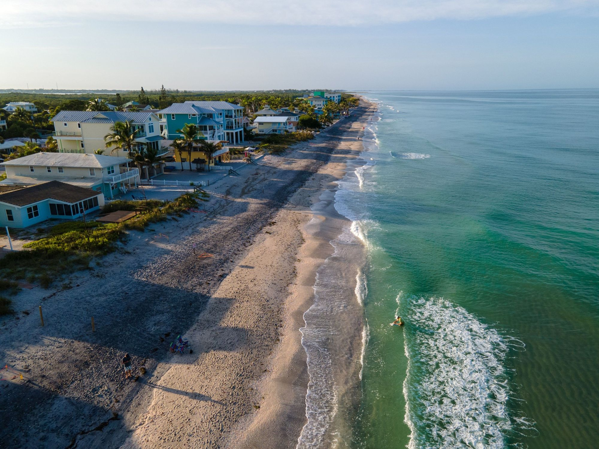

Sarasota County
Sarasota
Downtown on the bay, the arts, and neighborhoods like West of the Trail and Gulf Gate.
Explore Sarasota

Communities
Island towns, a downtown on the bay, beach towns to the south and new villages inland, each with a page of its own.
Choosing a town
Ryan and Katie sell homes in twelve towns across Sarasota and Manatee counties. Some sit on barrier islands with the Gulf on one side and a bay on the other; others are inland, built around lakes, ballparks and town centers.
Each town has its own page: daily life there, the schools by district, the drive times and the homes for sale now. Holmes Beach, Bird Key, Palmer Ranch and the other neighborhoods buyers ask about by name are covered on their town's page.
Twelve communities
Sarasota County
Downtown on the bay, the arts, and neighborhoods like West of the Trail and Gulf Gate.
Explore Sarasota

Sarasota County
Siesta Beach's nearly pure quartz sand and the shops of Siesta Village.
Explore Siesta Key

Manatee County
Bikes, golf carts and colorful beach cottages across three small island cities.
Explore Anna Maria Island

Manatee County
The Manatee River, West Bradenton and Palma Sola, and newer neighborhoods to the east.
Explore Bradenton

Sarasota County
A walkable historic downtown, Gulf beaches and the Venice Fishing Pier.
Explore Venice

Manatee and Sarasota counties
Second in the nation for new home sales in 2025, and the fastest-selling multigenerational community in the country (RCLCO).
Explore Lakewood Ranch

Sarasota County
Downtown Wellen on Grand Lake, and Atlanta Braves spring training at CoolToday Park.
Explore Wellen Park

City of Sarasota
St. Armands Circle, which began as John and Mable Ringling's dream, and Lido Beach a short walk away.
Explore Lido Key and St. Armands

Sarasota and Manatee counties
A barrier island between the Gulf and Sarasota Bay, its north end in Manatee County.
Explore Longboat Key

Sarasota County
Nokomis Beach, the county's oldest public beach, and fishing from the rocks at North Jetty.
Explore Nokomis

Sarasota and Charlotte counties
Dearborn Street, the original downtown of Old Englewood Village, and Manasota Key across Lemon Bay.
Explore Englewood

Manatee County
Weekend train rides at the Florida Railroad Museum, and new neighborhoods such as North River Ranch.
Explore Parrish
Neighborhoods
Buyers often search for these by name. Each one is part of a larger town, so its homes and daily life are on that town's page.

Narrowing it down
Ryan and Katie had the same choice to make when they left St. Louis in 2022.
Tell them what you want close by, whether that is the beach, downtown or a brand-new home with a lake out back, and they will help you narrow twelve towns to the two or three worth touring.
Resources
Schools, parcel records and things to do, from the counties and visitor bureaus that cover all twelve towns.
Talk to Ryan and Katie
Call Katie at 321-429-9031 or send a note naming the towns you like so far. Ryan and Katie will tell you how they compare on the things you care about.